SPX DCA Backtest
Мы прогнали 19 разных способов покупать S&P 500 (через фонд SPY) на 33 годах истории (1993–2026). В основе — $2000 в месяц на покупки, раз в неделю от $100 до $500 в зависимости от того, насколько рынок упал. Вопрос, на который искали ответ: можно ли обхитрить простое «регулярно покупаю и не парюсь» (DCA).
Период
33.2 лет реальных цен SPY с учётом дивидендов. Решения о покупках принимаем по пятницам, сигналы (SMA200 и аналогичные) считаем по дневным барам.
Бюджет
$24,000 в год = $461.54/нед. Всего за все 33 года внесено $800k. Стратегии различаются только тем, как эти деньги распределяются во времени.
Как сравниваем
Две оптики: FPV — сколько в итоге портфель стоит, и IRR/MaxDD — сколько доходности получили за каждый процент «боли» (просадки).
Вывод
Ни одна «умная» стратегия с кэш-буфером не обогнала простой Pure DCA в основном бэктесте. Держать деньги в пуле дороже, чем польза от покупок на дне. Но на исторических кризисах (Депрессия, Nikkei) картина меняется — см. вкладку Stress Test.
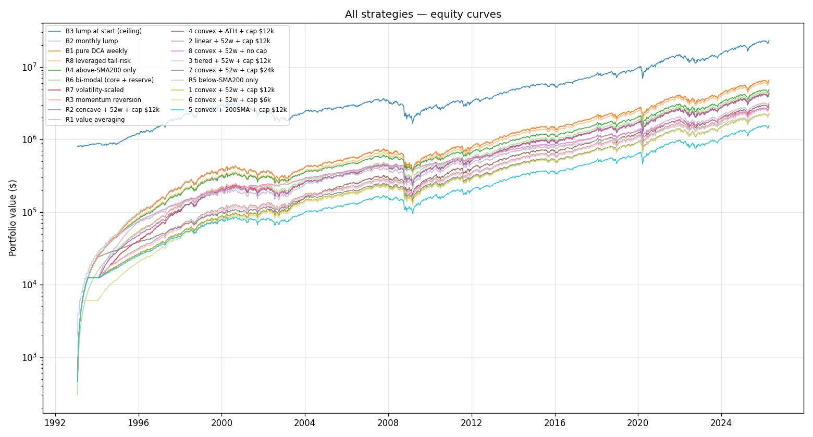
Рейтинг по FPV (абсолютная доходность)
Два столбца про деньги: Invested — сколько долларов реально ушло на акции (в скобках — процент от поступивших депозитов; если <100% — часть бюджета так и не дошла до рынка); Final Pool — сколько кэша осталось лежать в буфере на конец периода. Разница между этими двумя и FPV и есть «Cash Drag».
| Стратегия | FPV | IRR | Invested | Final Pool | MM | MaxDD | IRR/MaxDD |
|---|---|---|---|---|---|---|---|
| B3 lump at start (ceiling) | $23,227,917 | 10.63% | $800,308 (100%) | $0 | 29.02x | 54.61% | 0.195 |
| B2 monthly lump | $6,632,537 | 10.58% | $800,000 (100%) | $0 | 8.29x | 51.85% | 0.204 |
| B1 pure DCA weekly | $6,588,900 | 10.59% | $800,308 (100%) | $0 | 8.23x | 51.85% | 0.204 |
| R8 leveraged tail-risk | $6,148,848 | 10.27% | $800,308 (100%) | $0 | 7.68x | 51.60% | 0.199 |
| R4 above-SMA200 only | $4,905,196 | 9.25% | $642,500 (80%) | $157,808 | 7.63x | 41.72% | 0.222 |
| R6 bi-modal (core + reserve) | $4,763,442 | 9.11% | $590,985 (74%) | $209,323 | 8.06x | 41.68% | 0.219 |
| R7 volatility-scaled | $4,318,918 | 10.19% | $576,284 (98%) | $11,716 | 7.49x | 48.91% | 0.208 |
| R3 momentum reversion | $4,231,942 | 10.25% | $551,400 (98%) | $12,138 | 7.67x | 49.51% | 0.207 |
| R2 concave + 52w + cap $12k | $4,222,778 | 10.29% | $540,374 (98%) | $12,088 | 7.81x | 48.97% | 0.210 |
| R1 value averaging | $3,237,119 | 10.51% | $252,113 (95%) | $12,348 | 12.84x | 49.56% | 0.212 |
| 4 convex + ATH + cap $12k | $3,021,433 | 10.41% | $370,184 (97%) | $11,970 | 8.16x | 47.74% | 0.218 |
| 2 linear + 52w + cap $12k | $2,767,396 | 10.18% | $349,405 (97%) | $11,980 | 7.92x | 46.48% | 0.219 |
| 8 convex + 52w + no cap | $2,765,965 | 6.56% | $282,545 (35%) | $517,763 | 9.79x | 22.14% | 0.296 |
| 3 tiered + 52w + cap $12k | $2,654,502 | 10.17% | $335,600 (97%) | $11,938 | 7.91x | 46.07% | 0.221 |
| 7 convex + 52w + cap $24k | $2,272,118 | 9.64% | $282,545 (92%) | $23,917 | 8.04x | 43.12% | 0.224 |
| R5 below-SMA200 only | $2,270,502 | 5.60% | $198,500 (25%) | $601,808 | 11.44x | 18.84% | 0.297 |
| 1 convex + 52w + cap $12k | $2,260,118 | 10.13% | $282,545 (96%) | $11,917 | 8.00x | 45.28% | 0.224 |
| 6 convex + 52w + cap $6k | $2,254,118 | 10.42% | $282,545 (98%) | $5,917 | 7.98x | 46.44% | 0.224 |
| 5 convex + 200SMA + cap $12k | $1,574,627 | 9.90% | $197,785 (94%) | $12,215 | 7.96x | 43.86% | 0.226 |
Рейтинг по IRR / MaxDD (риск-скорректированный)
| Стратегия | FPV | IRR | Invested | Final Pool | MM | MaxDD | IRR/MaxDD |
|---|---|---|---|---|---|---|---|
| R5 below-SMA200 only | $2,270,502 | 5.60% | $198,500 (25%) | $601,808 | 11.44x | 18.84% | 0.297 |
| 8 convex + 52w + no cap | $2,765,965 | 6.56% | $282,545 (35%) | $517,763 | 9.79x | 22.14% | 0.296 |
| 5 convex + 200SMA + cap $12k | $1,574,627 | 9.90% | $197,785 (94%) | $12,215 | 7.96x | 43.86% | 0.226 |
| 6 convex + 52w + cap $6k | $2,254,118 | 10.42% | $282,545 (98%) | $5,917 | 7.98x | 46.44% | 0.224 |
| 1 convex + 52w + cap $12k | $2,260,118 | 10.13% | $282,545 (96%) | $11,917 | 8.00x | 45.28% | 0.224 |
| 7 convex + 52w + cap $24k | $2,272,118 | 9.64% | $282,545 (92%) | $23,917 | 8.04x | 43.12% | 0.224 |
| R4 above-SMA200 only | $4,905,196 | 9.25% | $642,500 (80%) | $157,808 | 7.63x | 41.72% | 0.222 |
| 3 tiered + 52w + cap $12k | $2,654,502 | 10.17% | $335,600 (97%) | $11,938 | 7.91x | 46.07% | 0.221 |
| 2 linear + 52w + cap $12k | $2,767,396 | 10.18% | $349,405 (97%) | $11,980 | 7.92x | 46.48% | 0.219 |
| R6 bi-modal (core + reserve) | $4,763,442 | 9.11% | $590,985 (74%) | $209,323 | 8.06x | 41.68% | 0.219 |
| 4 convex + ATH + cap $12k | $3,021,433 | 10.41% | $370,184 (97%) | $11,970 | 8.16x | 47.74% | 0.218 |
| R1 value averaging | $3,237,119 | 10.51% | $252,113 (95%) | $12,348 | 12.84x | 49.56% | 0.212 |
| R2 concave + 52w + cap $12k | $4,222,778 | 10.29% | $540,374 (98%) | $12,088 | 7.81x | 48.97% | 0.210 |
| R7 volatility-scaled | $4,318,918 | 10.19% | $576,284 (98%) | $11,716 | 7.49x | 48.91% | 0.208 |
| R3 momentum reversion | $4,231,942 | 10.25% | $551,400 (98%) | $12,138 | 7.67x | 49.51% | 0.207 |
| B1 pure DCA weekly | $6,588,900 | 10.59% | $800,308 (100%) | $0 | 8.23x | 51.85% | 0.204 |
| B2 monthly lump | $6,632,537 | 10.58% | $800,000 (100%) | $0 | 8.29x | 51.85% | 0.204 |
| R8 leveraged tail-risk | $6,148,848 | 10.27% | $800,308 (100%) | $0 | 7.68x | 51.60% | 0.199 |
Что выбрать?
Мы прогнали 18 разных стратегий на двух исторических периодах: спокойном (SPY 1993–2026, только кризисы 2008 и COVID) и экстремальном (Shiller S&P с 1871 — включая Великую Депрессию, стагфляцию 70-х, и Nikkei 1985+ с «потерянными десятилетиями»). Результаты зависят от того, в каком мире вы ожидаете жить следующие 10–40 лет. Ниже — практические рекомендации под разные сценарии.
«Я вкладываюсь на 20–40 лет, в долгосрок верю»
Простейший вариант, который трудно обыграть на спокойном рынке.
→ B1 pure DCA weekly или B2 monthly lump
Основной бэктест (33 года SPY, DCA $2000/мес): $800k внесённых → $6.59M. Ни одна «умная» стратегия с кэш-буфером не обогнала обычный DCA в этом периоде — потому что «налог» на простаивающие деньги (Cash Drag) съел всю выгоду от покупок на дне.
Когда подвести может: если случится «японский сценарий» (30+ лет боковика/падения) — DCA будет усреднять по падающему рынку и только в конце догонит.
«Боюсь затяжной медвежки на 10–15 лет, хочу подстраховаться»
Единственная стратегия, стабильно бьющая DCA в кризисных сценариях.
На Nikkei 15-летних окнах (1985+, японские «потерянные десятилетия») обходит Pure DCA в 74% окон с медианной α +2.5%. Механика: разрешает пулу временно уйти в минус (как бы кредитуется у будущих депозитов), чтобы выкупать самое дно. Копит больше «сухого пороха» и разворачивает его агрессивнее.
Требует: дисциплины не дрогнуть в самый страшный момент (стратегия покупает когда уже -40/50% — психологически тяжело). И готовности принять, что на спокойном рынке чуть проиграет DCA (~5% на 15y).
«Хочу компромисс: простой DCA, но с лёгким умом»
Половина пула работает как DCA, вторая — резерв на кризис.
→ R6 bi-modal (core + reserve)
Основной пул тратит равномерно (как DCA), а второй копит и разгружается только когда рынок падает на ≥15%. На Nikkei 15y обходит DCA в 44% окон с нулевой α — то есть не хуже DCA, но добавляет «страховку на кризис».
Не лучший вариант ни в чём: не обгоняет DCA в спокойные годы и не настолько агрессивен как R8 в кризисные. Психологически — самый комфортный средний путь.
«Главное — чтобы не было сильных просадок»
Самый спокойный сон, но цена — половина итогового FPV.
→ R5 below-SMA200 only или аналоги с глубокими фильтрами
Покупает только когда рынок ниже трендовой (SMA200). В основном бэктесте MaxDD всего 18.8% (vs 51.9% у DCA) — ни одна другая стратегия не даёт такого спокойствия. Но FPV — $2.27M (против $6.59M у DCA), то есть треть от потенциала.
Трейд-офф: вы платите ~$4M за то, чтобы пережить худшие падения на 30% плавнее. Имеет смысл если портфель — единственный актив и/или приближается пенсия.
«У меня уже есть большая сумма, хочу вложить всё сразу»
Теоретический потолок — исторически lump sum бьёт DCA в 2/3 случаев.
Если у вас уже есть деньги — размазывать их по годам значит держать часть в кэше, пока рынок растёт. На 33 годах SPY lump-at-start дал $23.1M из $800k — это «потолок» доходности, которого никто не достигает при постепенных вкладах.
Психология: если зашли на пике и увидели −50% через год — легко запаниковать и продать. Подходит только с долгим горизонтом и стальными нервами.
Итого, короткая инструкция
Если кратко: для большинства людей с горизонтом 20+ лет и без сильных взглядов на будущее рынка — просто B1 pure DCA weekly. Это нижний порог сложности и верхний порог доходности в спокойные эпохи.
Если верите, что впереди «японский сценарий» или просто хотите подстраховаться от затяжных кризисов — R8 leveraged tail-risk. Единственная стратегия, которая в наших стресс-тестах статистически устойчиво обгоняет DCA на кризисных данных.
Все остальные варианты — это либо вариации на ту же тему (чуть-чуть по-разному распределённые покупки), либо «спокойный сон за счёт доходности». Изучайте детали по вкладкам в сайдбаре.
Что мы прогоняли и зачем
18 стратегий
3 бенчмарка (Pure DCA, monthly lump, lump-at-start), 8 базовых Enhanced DCA (разные формулы распределения покупок по глубине просадки), 7 стратегий Round 2 (Value Averaging, SMA-фильтры, momentum, bi-modal, leveraged tail-risk).
Основной бэктест
SPY 1993–2026, 33 года, недельные покупки. Бюджет $24k/год = $800k за период. Отвечает на вопрос: «какая стратегия лучше в спокойные времена?»
Stress Test на Shiller
S&P 500 с 1871 года с поправкой на инфляцию и дивиденды. 10/15/20-летние скользящие окна. Ловим Великую Депрессию, стагфляцию 70-х, все исторические кризисы.
Stress Test на Nikkei
Японский индекс 1985+ — 30-летнее падение с пика 1989. Главный «антипример» для долгосрочного DCA: индекс до сих пор не вернулся к пику. Проверка на стратегию «что если мы не Америка».
1 convex + 52w + cap $12k
Базовый вариант копилки: кладём $461/нед в пул, покупаем по выпуклой формуле от просадки к 52-недельному максимуму. Cap пула — $12k.
Гипотеза: Чем глубже падение, тем больше покупка — так агрессивнее ловим дно.
Механика: Каждую пятницу добавляем $461.54 в пул. Считаем просадку d = 1 − price/max(52w). Размер покупки: buy = 100 + 400 · (d/0.30)², т.е. при d=0% берём $100, при d≈30% — $500. Cap на пуле $12k — всё сверху покупается принудительно.
Вердикт: Проигрывает Pure DCA на ~2x: cash drag дороже выгоды от покупок на просадках.
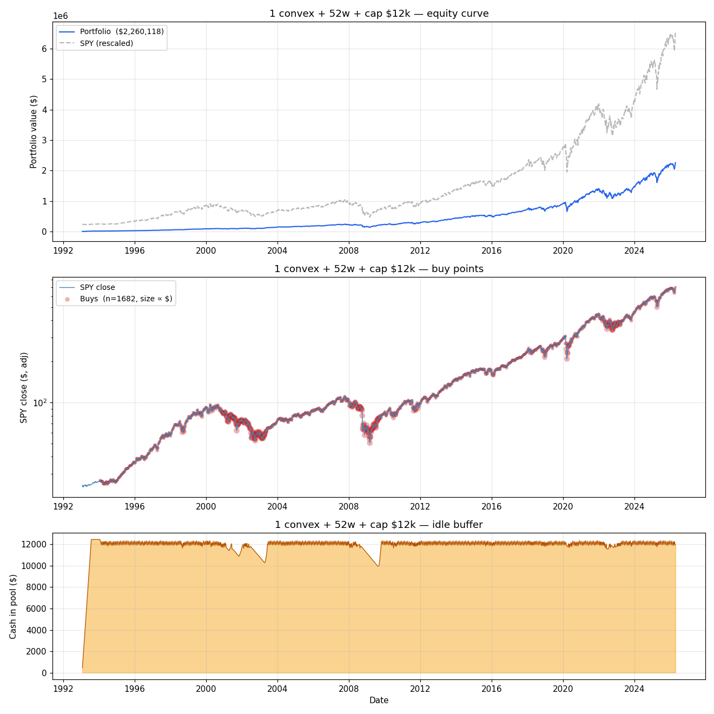
2 linear + 52w + cap $12k
То же самое, но линейная формула: buy = 100 + 1333 · d.
Гипотеза: Может, выпуклость слишком агрессивна? Линейный подход плавнее масштабируется.
Механика: Те же правила пула, но размер покупки растёт линейно с просадкой.
Вердикт: Чуть лучше convex по FPV, но разница в пределах шума — cash drag всё равно съедает эффект.
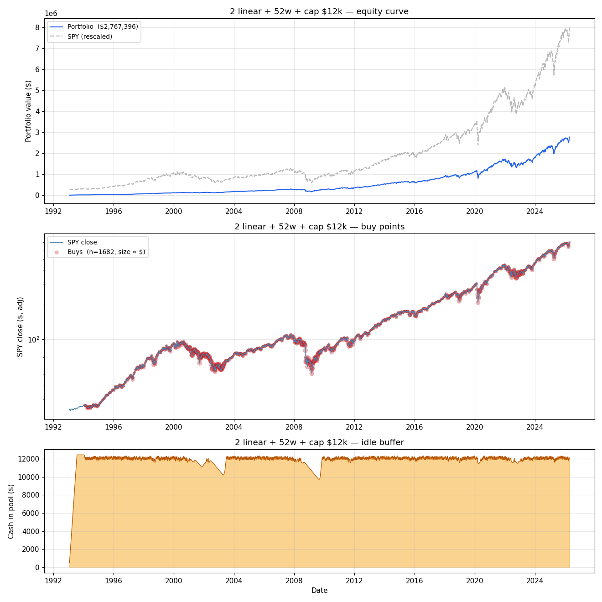
3 tiered + 52w + cap $12k
Ступенчатая формула: $100 / $200 / $300 / $500 в зависимости от уровня просадки.
Гипотеза: Простая и интерпретируемая — легко следовать человеку.
Механика: Просадка <5% → $100, 5-10% → $200, 10-20% → $300, >20% → $500.
Вердикт: Работает близко к convex и linear. Хорош для психологии, но проигрывает baseline.
4 convex + ATH + cap $12k
Convex, но точка отсчёта — исторический максимум (ATH), а не 52-недельный.
Гипотеза: ATH — более «абсолютный» якорь, должен лучше ловить большие медвежьи рынки.
Механика: Просадка считается от всевременного максимума. Во всех остальных аспектах идентично варианту 1.
Вердикт: Чуть лучше чем 52w-вариант за счёт более глубоких сигналов в 2008 и COVID, но всё равно ниже DCA.
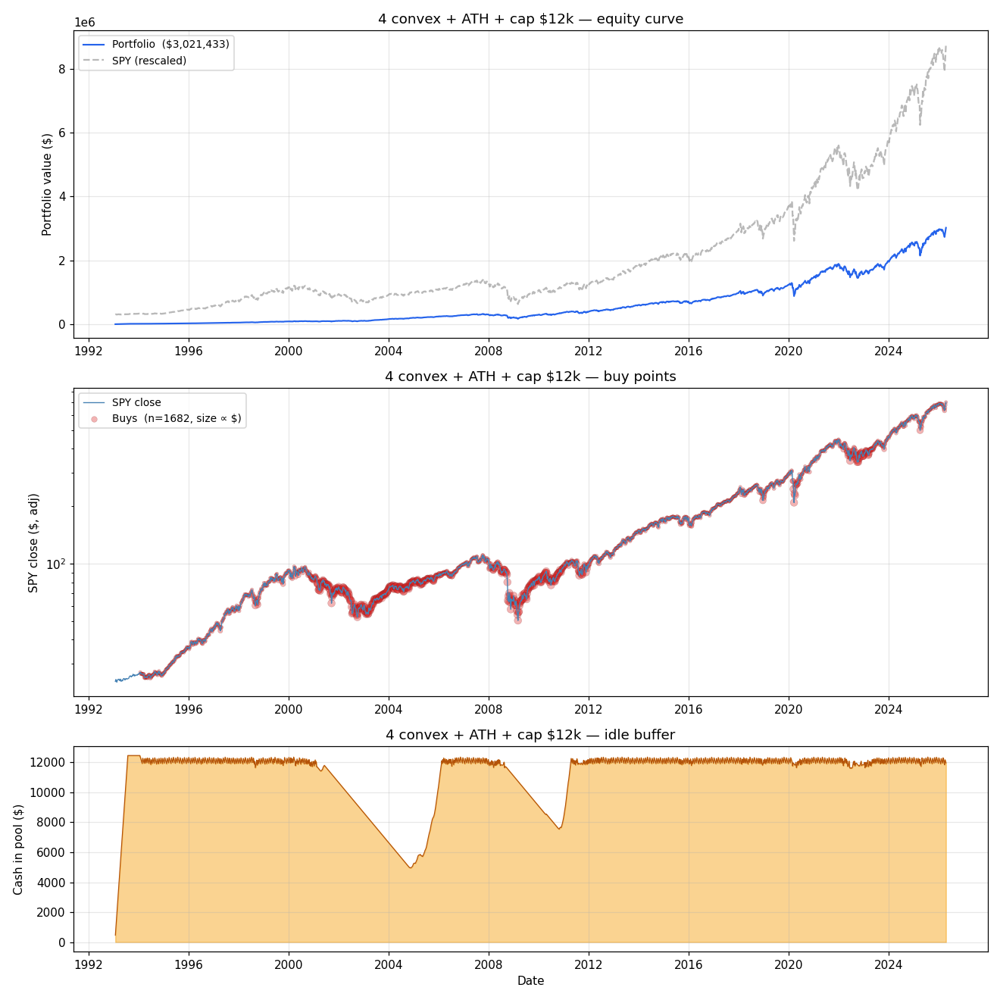
5 convex + 200SMA + cap $12k
Точка отсчёта — дневная SMA200 вместо максимума.
Гипотеза: Скользящая средняя — плавнее, меньше ложных просадок.
Механика: Просадка d = 1 − price/SMA200 (только если price < SMA200). Иначе $100.
Вердикт: Намного меньше инвестирует ($197k из $800k), оттого низкий FPV. Но просадка сама по себе скромная.
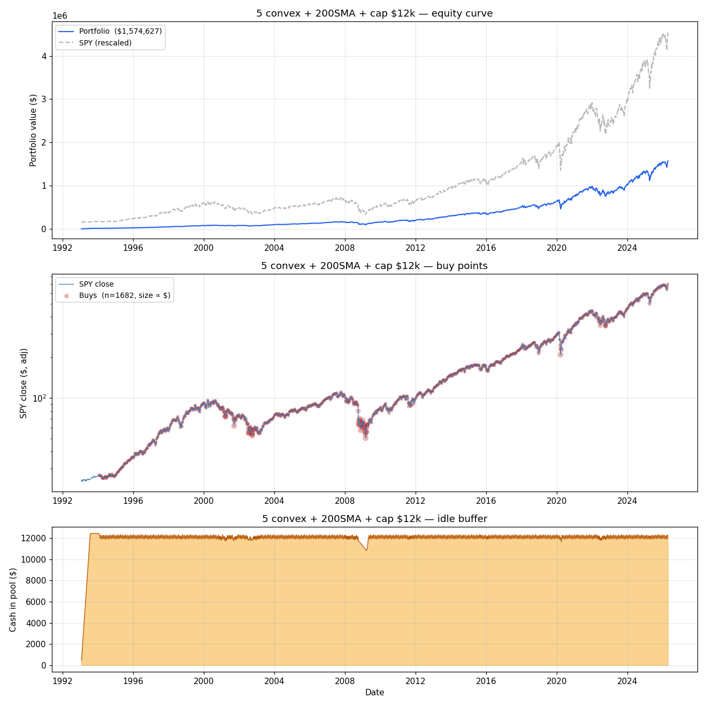
6 convex + 52w + cap $6k
Та же формула, но пул ограничен $6k — быстрее вынужденные покупки.
Гипотеза: Меньший пул = меньше cash drag.
Механика: Всё как в варианте 1, но как только пул достигает $6k, излишек принудительно покупает сразу.
Вердикт: Действительно меньше cash drag ($6k vs $12k), но стратегия теряет гибкость и выигрыш не большой.
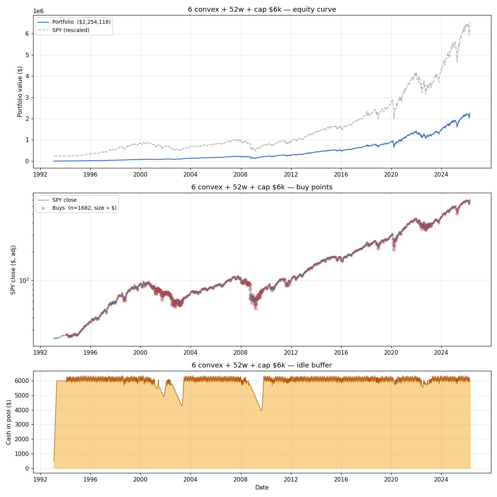
7 convex + 52w + cap $24k
Convex с большим пулом $24k — запас на большие просадки.
Гипотеза: Больше сухого пороха = лучше покупки на -30% и ниже.
Механика: Как вариант 1, но пул может копиться до $24k перед принудительной покупкой.
Вердикт: Cash drag в разы выше ($23k), выигрыш не компенсирует — больший буфер = больше простаивающих денег.
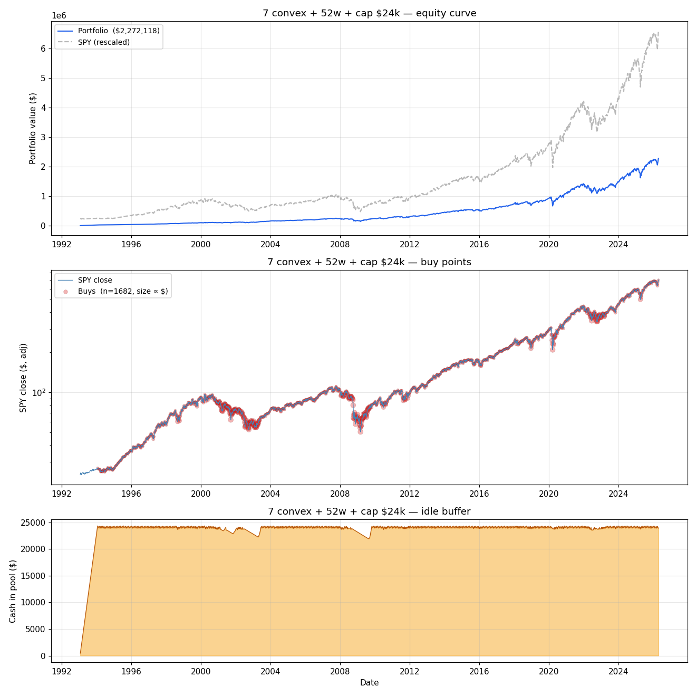
8 convex + 52w + no cap
Без cap на пуле — деньги могут копиться бесконечно пока нет просадки.
Гипотеза: В теории: копим пока рынок растёт, вываливаем всё во время краха.
Механика: Те же правила покупки, но излишек пула никуда не девается — идёт дальше копиться.
Вердикт: Инвестируем только $282k из $800k бюджета — 65% сидит в кэше. Огромный cash drag ($258k). MaxDD низкий (22%) за счёт этого, но FPV сильно ниже.
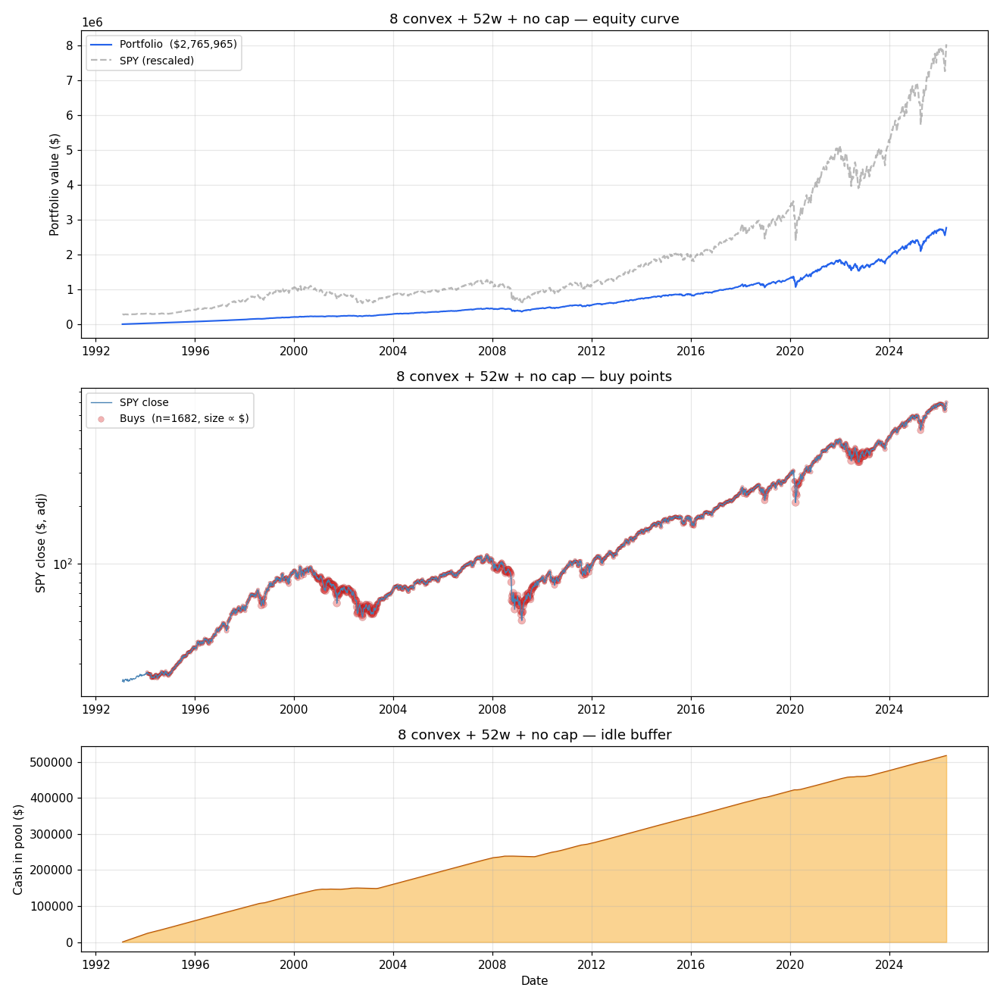
B1 pure DCA weekly
Просто $461.54 каждую пятницу в рынок. Никакой магии.
Гипотеза: Контрольная: что будет если вообще не пытаться «умничать».
Механика: Каждую неделю покупаем акций ровно на weekly deposit. Пул всегда 0.
Вердикт: Одна из лучших стратегий по FPV. Ни одна «умная» стратегия с cash buffer не обгоняет.
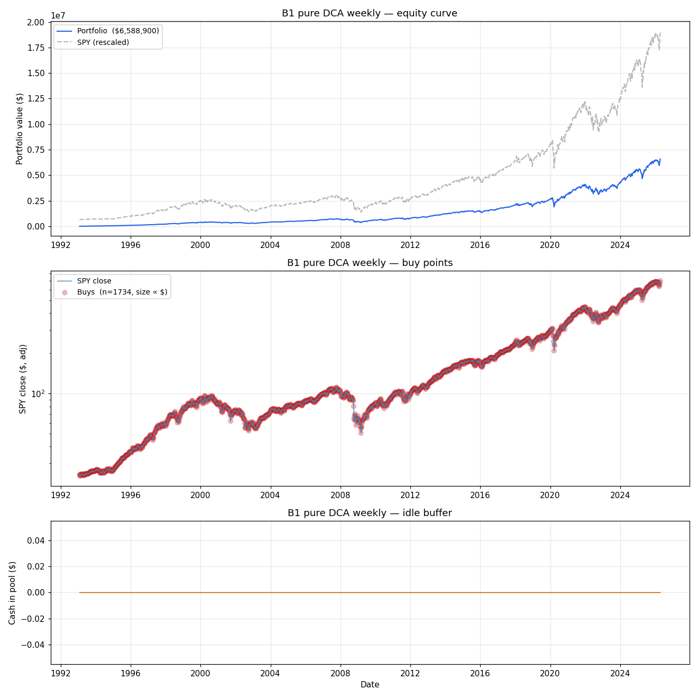
B2 monthly lump
$2000 первого числа каждого месяца — всё в рынок сразу.
Гипотеза: Контрольная: эквивалент B1, но месячными паями.
Механика: Копим $461/нед в пул, но первого числа месяца тратим всё (~$2000).
Вердикт: Практически идентичный результат с B1. Time-in-market решает.
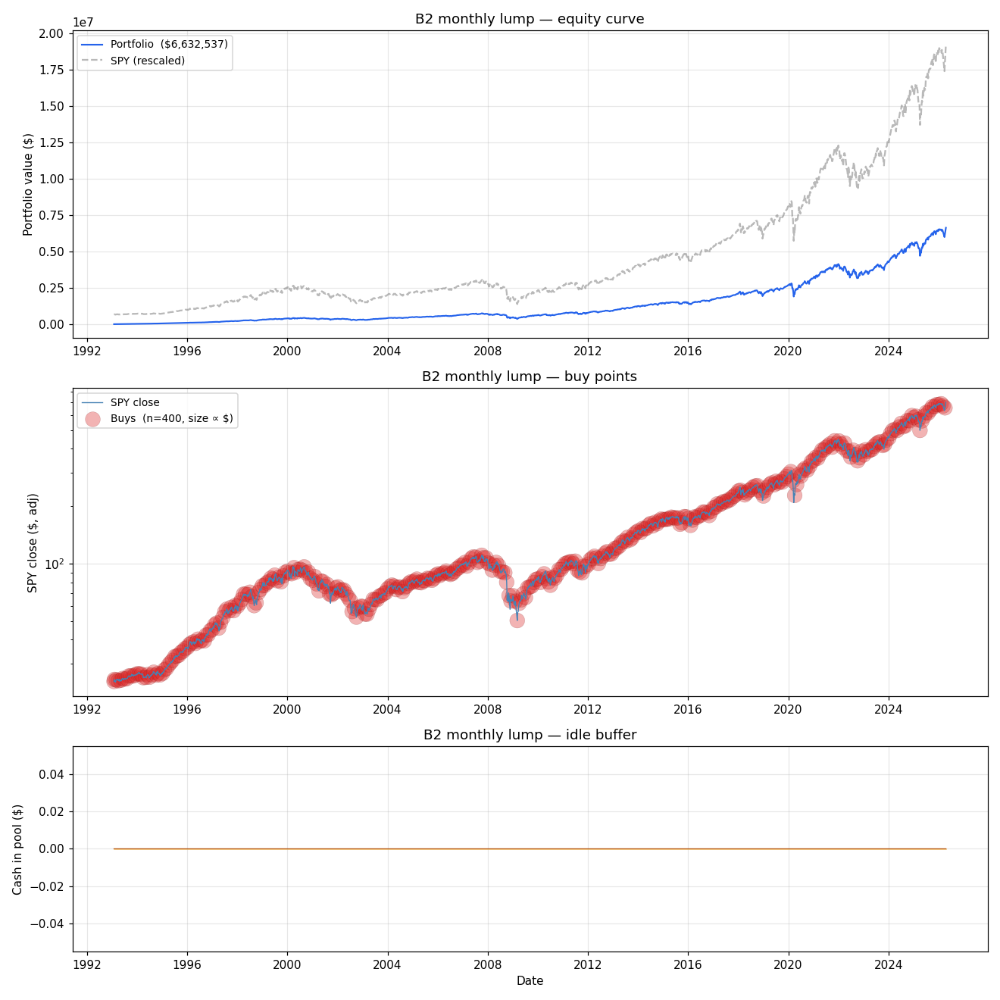
B3 lump at start (ceiling)
Положил $800k сразу в начале — и забыл на 33 года.
Гипотеза: Теоретический потолок: что было бы, если б деньги появились магически в 1993-м.
Механика: Купили SPY на все $800k в первый день и держим до конца периода.
Вердикт: $23M — технический потолок, нереалистичный для инвестора, у которого нет $800k в начале.
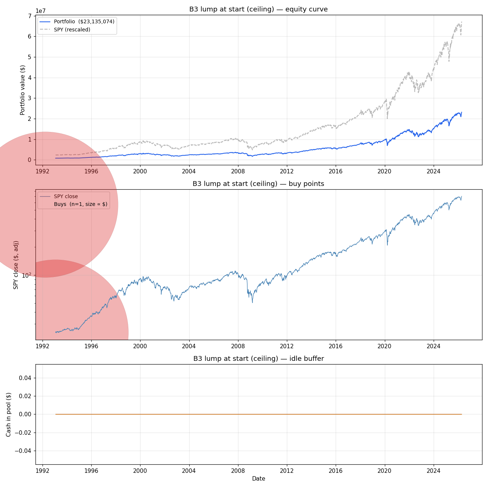
R1 value averaging
Целевая траектория роста портфеля: каждую неделю приводим стоимость к растущему таргету.
Гипотеза: Value Averaging по Edleson: покупай больше когда отстаём от целевой траектории.
Механика: Целевое equity на неделе k: target = k · $461.54 · (1+g)^k с мягким ростом g. Если портфель отстаёт — докупаем столько, чтобы сравняться (в пределах weekly cap). Если впереди — не покупаем.
Вердикт: Лучший Money Multiple (12.84x): тратит всего $252k, получает $3.2M. Но абсолютный FPV ниже DCA — просто меньше денег вложено.
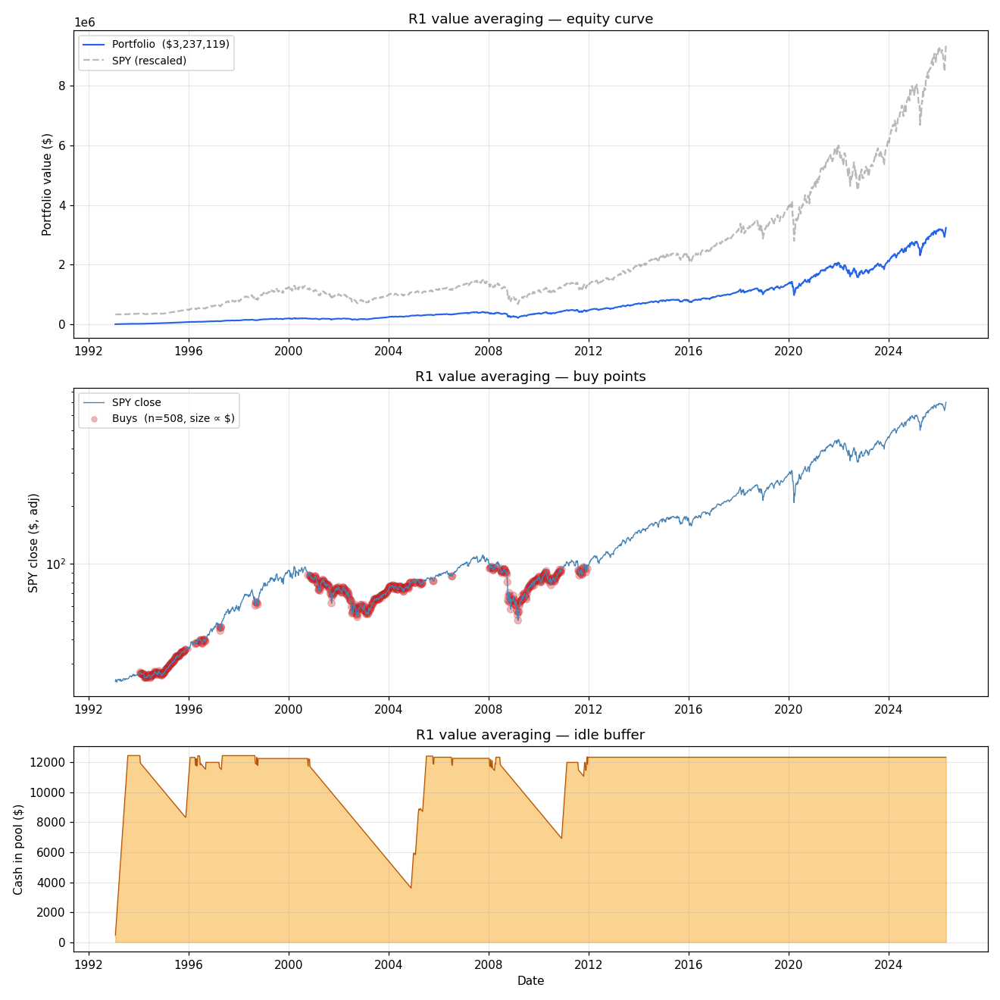
R2 concave + 52w + cap $12k
Вогнутая формула: buy = 100 + 400 · √(d/0.10). Быстро выходит на полную при -10%.
Гипотеза: Может, срочно реагировать надо на небольшие просадки, а не ждать -30%.
Механика: Уже при d=10% даём максимум $500. Дальнейшие просадки не увеличивают размер.
Вердикт: Средний результат. Быстрее расходует пул на мелких просадках — меньше cash drag, но и меньше запаса на крупные кризисы.
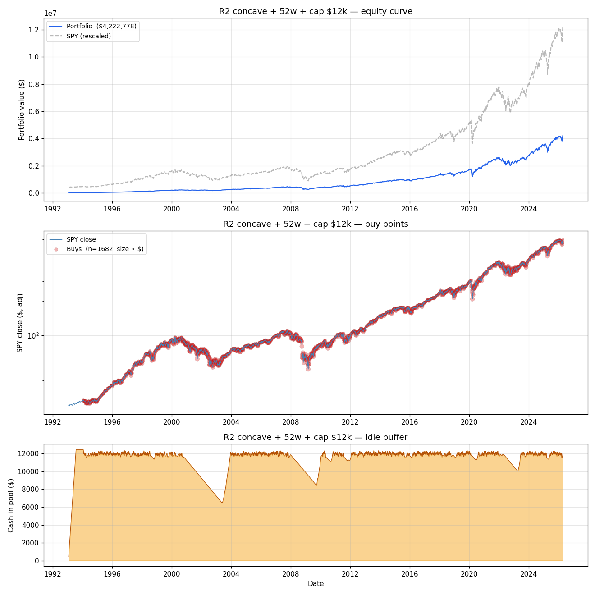
R3 momentum reversion
Контрариан: $500 если прошлая неделя красная, $200 если зелёная, $300 если плоская.
Гипотеза: Buy weakness — покупай после падения, не после роста.
Механика: Смотрим знак закрытия прошлой недели, по нему выбираем размер из буфера.
Вердикт: Работает стабильно, близко к pure DCA. Простейший сигнал даёт понятный эффект без больших провалов.
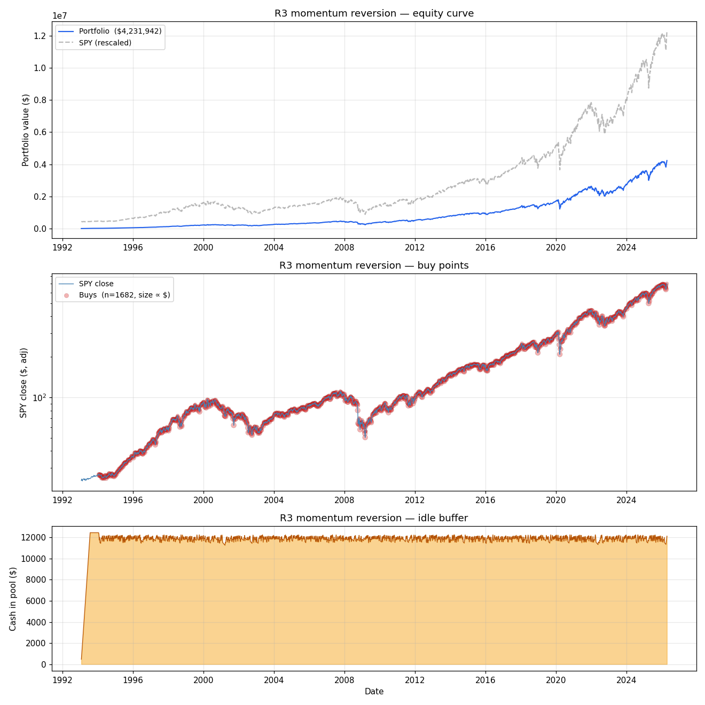
R4 above-SMA200 only
Покупаем только когда цена выше 200-дневной SMA. Иначе копим в пуле.
Гипотеза: Trend-following: не лови падающий нож, жди подтверждения тренда.
Механика: Если close > SMA200 на дневном графике — покупаем $461.54. Иначе пропуск.
Вердикт: Второй по FPV ($4.9M) среди реалистичных. MaxDD ниже чем у DCA (42% vs 52%). Хороший компромисс риск/доход.
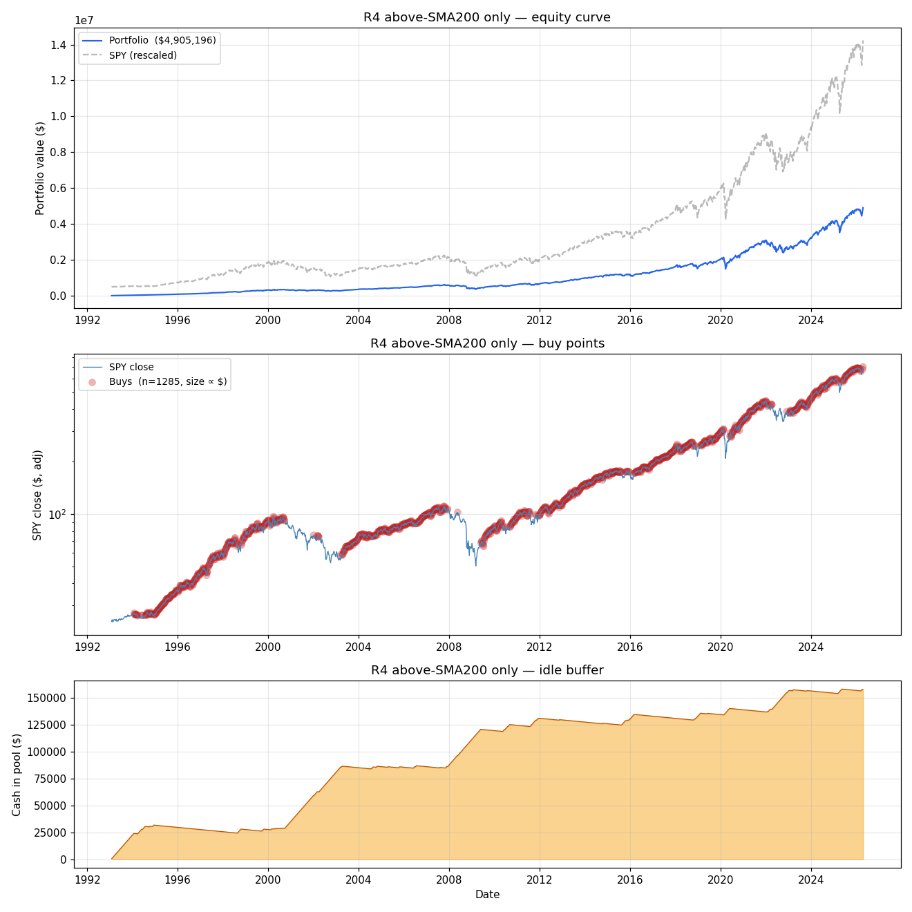
R5 below-SMA200 only
Зеркало R4: покупаем ТОЛЬКО когда цена ниже SMA200.
Гипотеза: Buy the dip буквально: только в медвежьих фазах.
Механика: Close < SMA200 → $461.54. Иначе пропуск. За 33 года это ~25% времени.
Вердикт: Лучший IRR/MaxDD (0.297), но только $198k вложено за всё время — остальное простаивает. MaxDD 18%, но и FPV скромный.
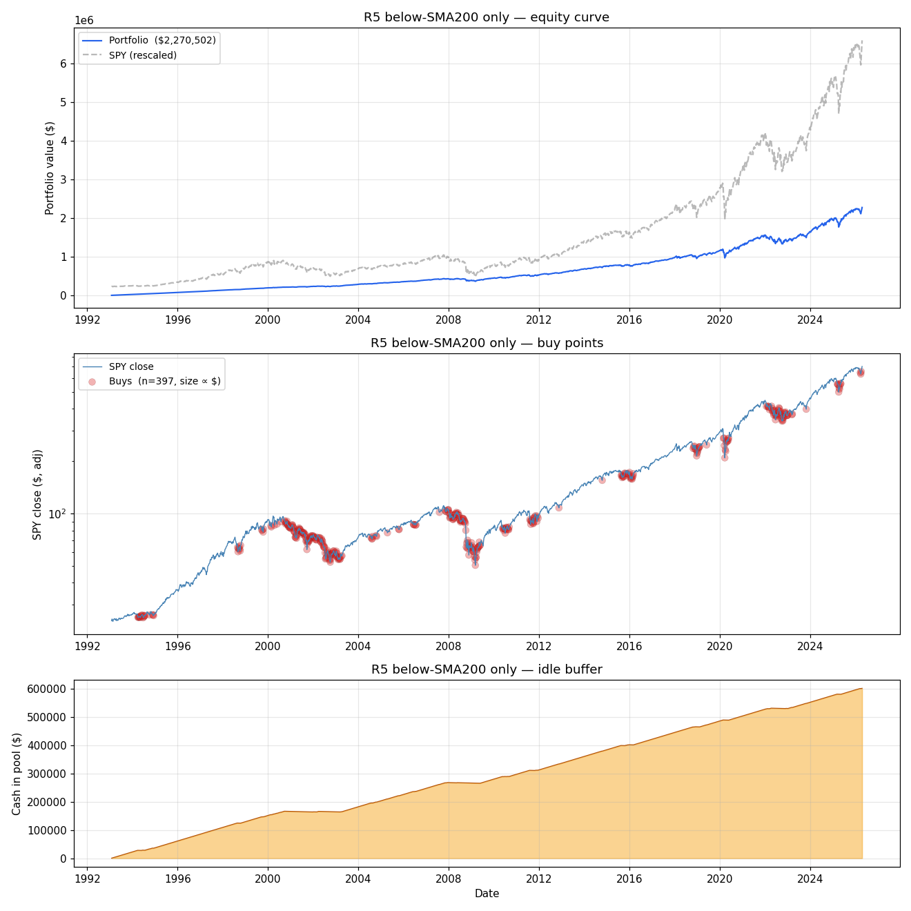
R6 bi-modal (core + reserve)
Два пула: core ($300/нед сразу в рынок) + reserve ($162/нед копится на -15% просадки).
Гипотеза: Совместить baseline DCA с отдельным «сухим порохом» на крах.
Механика: Core: $300 в неделю, всегда. Reserve: $161.54 в неделю копится. При drawdown ≥ 15% активируется — тратим резерв пропорционально глубине.
Вердикт: Хороший FPV ($4.57M) и неплохой MaxDD (47%). Логика понятна — но DCA всё равно обгоняет.
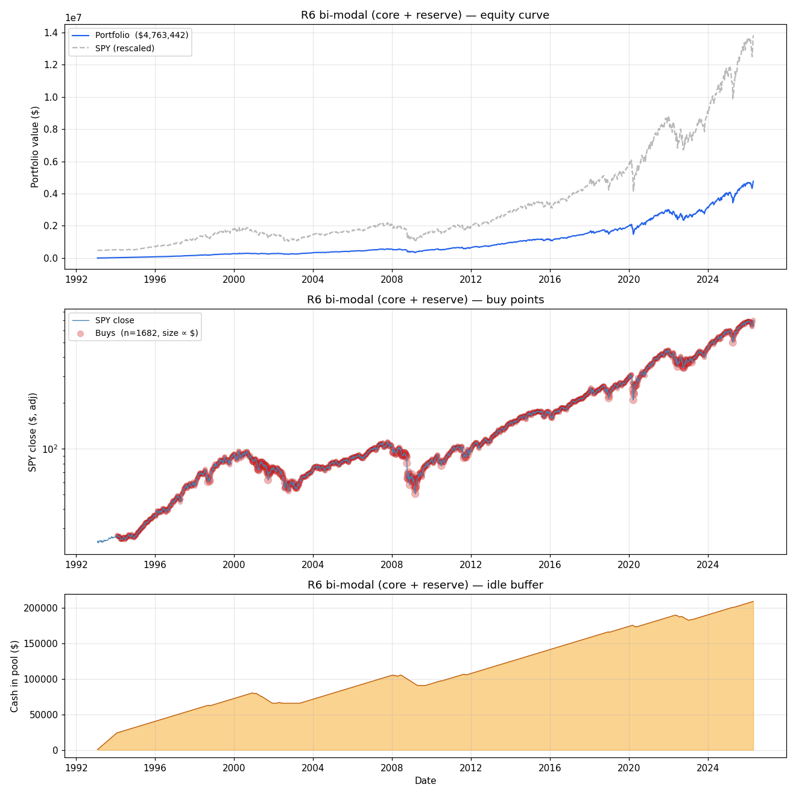
R7 volatility-scaled
Размер покупки обратно пропорционален волатильности.
Гипотеза: Volatility targeting: в спокойное время — больше, в турбулентное — меньше.
Механика: baseline_vol = медиана 12-недельной волатильности за первые 52 недели. buy = 461.54 · (baseline_vol / current_vol), ограничено $100–$500.
Вердикт: Средний результат. Волатильность не очень сильный сигнал, cash drag аналогичный остальным.
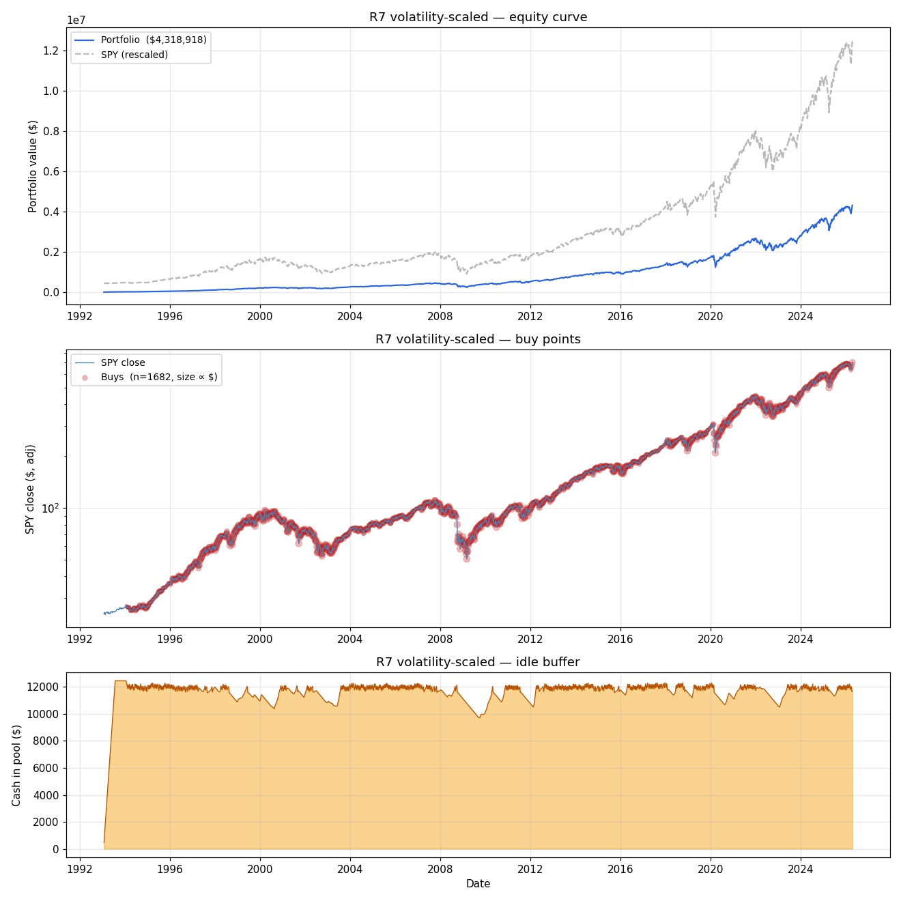
R8 leveraged tail-risk
Разрешаем пулу уходить в минус до -$12k на больших просадках (-25%+).
Гипотеза: Раз уж копилка не работает, давай кредитоваться в кризис.
Механика: При drawdown ≥ 25% можем покупать в долг (до -$12k). Восстановление пула при drawdown ≤ 10% — возвращаем «в долг» из будущих депозитов. Максимальное единичное вливание $800.
Вердикт: Ближе всех к pure DCA (91% от FPV), но сложный и риски «кредитования» себе психологически тяжёлые.
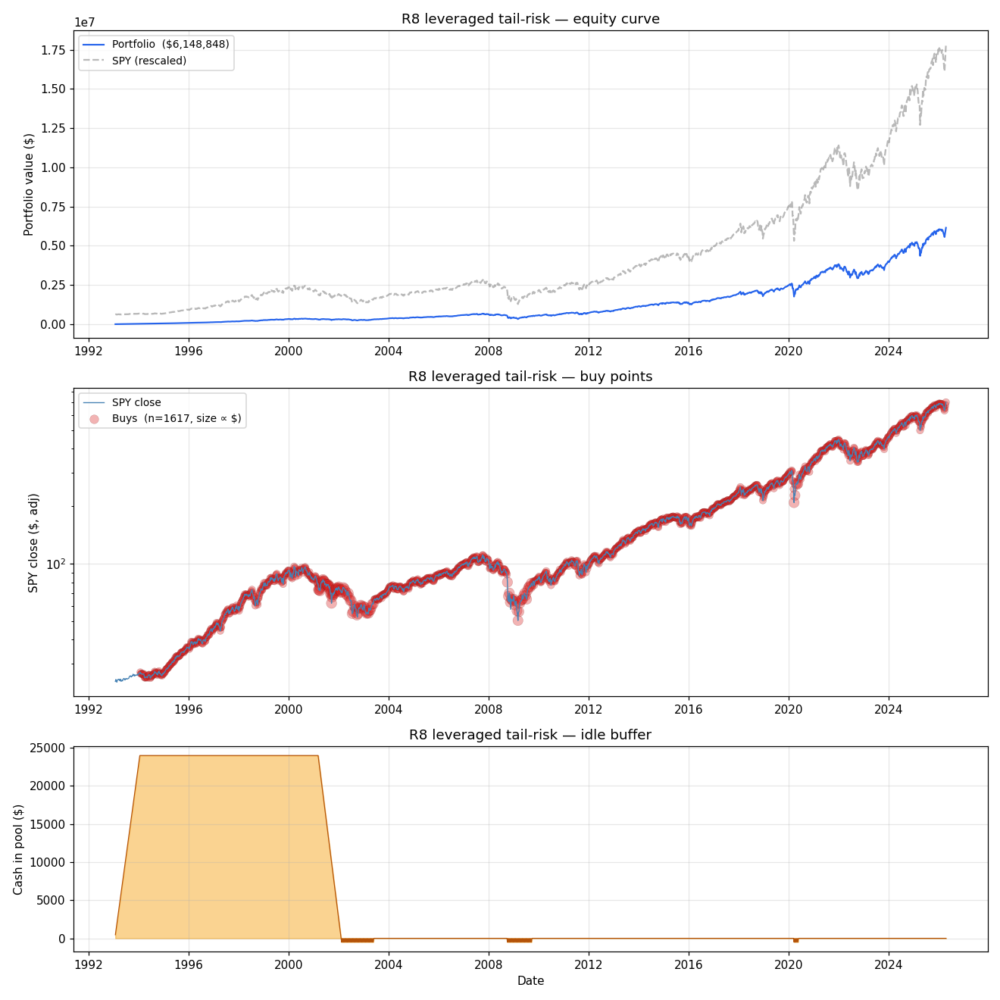
Stress Test: что если случится «такого не было 100 лет»
Основной бэктест (1993–2026) ловит только кризисы 2008 и COVID — это относительно мягкие падения. Здесь проверяем стратегии на периодах, где реально рушилось: Великая Депрессия 1929 (S&P −89% номинально, 25 лет восстановления), стагфляция 1966–82, и Nikkei 1989 — 30-летнее падение, из которого японский инвестор не вышел до сих пор.
Как устроено
Данные
Shiller Real TR по S&P 500 с 1871 года (с поправкой на инфляцию, с реинвестированием дивидендов). Nikkei 225 с 1985.
Скользящие окна
Прогоняем каждую стратегию на каждом 10/15/20-летнем интервале истории, сдвигая старт на 1 год (Rolling window). Так ловим все плохие эпохи.
Бюджет
$2000/мес. За 10 лет — $240k, за 15 — $360k, за 20 — $480k. Покупки от $400 до $2000 (бывшие недельные $100–$500 пересчитаны в месяц).
Метрики
Медиана FPV, худший исход, MaxDD, и главное — alpha к Pure DCA: насколько часто и на сколько стратегия обгоняет базовый DCA.
Top-5 стратегий по α к Pure DCA (Shiller, 15-летние окна)
Положительная α означает: на 15-летних окнах стратегия в среднем зарабатывает больше обычного DCA.
- B3 lump at start (ceiling)α +56.2%
- B1 pure DCA monthlyα +0.0%
- R8 leveraged tail-riskα -4.8%
- R7 volatility-scaledα -7.3%
- R6 bi-modal (core+reserve)α -10.4%
Top-5 стратегий по «худшему окну» (Shiller, 15y)
Минимальный FPV из всех 15-летних окон — худший исход инвестора, который неудачно зашёл (например, аккурат перед Великой Депрессией).
- R1 value averagingworst $360k
- 8 convex + 12m + no capworst $324k
- R5 below-SMA (monthly)worst $315k
- R4 above-SMA (monthly)worst $292k
- R3 momentum reversionworst $291k
Top-5 по α на Nikkei 15y (японские «потерянные десятилетия»)
- R8 leveraged tail-riskα +2.5%
- B1 pure DCA monthlyα +0.0%
- R6 bi-modal (core+reserve)α -0.9%
- R7 volatility-scaledα -1.0%
- R3 momentum reversionα -4.0%
Top-5 по худшему окну на Nikkei 15y
- R1 value averagingworst $360k
- R4 above-SMA (monthly)worst $279k
- R5 below-SMA (monthly)worst $264k
- 8 convex + 12m + no capworst $261k
- R3 momentum reversionworst $234k
Ключевой инсайт: в спокойные периоды (как 1993–2026 в основном бэктесте) простой DCA выигрывает. В кризисных периодах (Депрессия, Nikkei lost decades) преимущество переходит к стратегиям с буфером, которые накапливают «сухой порох» и разгружают его на глубоких просадках. R8 (Leveraged tail-risk) и R6 (Bi-modal) — наиболее устойчивые к экстремальным сценариям.
Честно о методологии
1. Warmup-штраф для стратегий. Pure DCA покупает с первого дня; стратегии с буфером имеют WARMUP=12 месяцев (первый год только копят в пуле, не тратят). За этот год DCA успевает поработать, а буферные стратегии сидят в кэше. Это систематически занижает показатели стратегий в пользу DCA — то есть «R8 бьёт DCA в 74% окон Nikkei» — это консервативная оценка, на самом деле выше.
2. Shiller — real, Nikkei — nominal. S&P 500 у Shiller скорректирован на CPI и включает дивиденды. Nikkei взят из yfinance в номинальных йенах без дивидендов. Сравнивать α внутри каждого датасета корректно (искажение одинаковое для всех стратегий), но абсолютные долларовые цифры на Nikkei — это йены в долларовой одёжке.
3. Money Multiple и Invested в основном бэктесте. Для буферных стратегий, которые пропускают депозиты при полном пуле, показатель «Invested» меньше $800k, а MM=FPV/Invested — выше. Это не «бесплатный обед», это «недовложенный капитал» — оставшиеся деньги считаются в FPV как кэш, но не работали на рынке.
4. Survivor bias данных. S&P 500 и Nikkei — индексы, которые «выжили». Данные по рынкам, которые исчезли (Аргентина 2001, Россия 1917, китайский рынок до 1949), в расчёт не идут. Реальный risk-of-ruin выше, чем показывает любой исторический бэктест.
5. Аудит accountingа (выполнен и задокументирован). Мы прошли по каждой стратегии и проверили инвариант: «каждая стратегия должна получить одинаковый бюджет $800,307.69 за 33 года SPY». Нашли и починили 2 бага: B3 lump at start был недофинансирован на $3,199 (0.4%) из-за расчёта через календарные годы вместо недельного депозита, и R6 bi-modal (weekly) молча терял $193,723 — 24% депозитов — из-за внутреннего капа резерва. B2 monthly lump отстаёт на $307.69 (0.04%) по календарной причине (400 месяцев × $2k vs 1734 недель × $461.54); не чиним, т.к. ниже шума округления. Стратегии с дизайнерским buffer-cap (1-7, R1, R3, R7) пропускают депозиты когда пул полон — это документированная особенность (см. пункт 3 про Money Multiple), а не баг.
S&P 500 — Shiller 1871+ (real TR)
Период: Jan 1871 – Sep 2023 (1833 месяцев). Доходности скорректированы на CPI (real) и включают реинвестирование дивидендов.
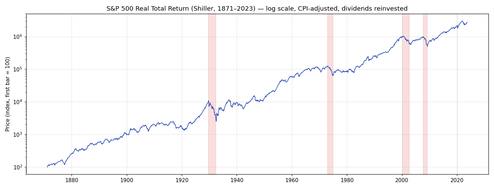
Сводная таблица по окнам
Для каждой длины окна (10/15/20 лет) сдвигаем стартовую дату по истории и прогоняем каждую стратегию (Rolling window). Смотрим что получается в среднем и в худшем случае — так видим, насколько результат зависит от везения с таймингом.
10-летние окна (143 окон)
| Стратегия | Median FPV | Worst FPV | Worst window | Best FPV | Median MaxDD | Worst MaxDD | α vs DCA (median) | % окон > DCA |
|---|---|---|---|---|---|---|---|---|
| B3 lump at start (ceiling) | $470k | $153k | 1911–1920 | $1.20M | 33.8% | 76.8% | +40.5% | 83% |
| B1 pure DCA monthly | $347k | $150k | 1965–1974 | $802k | 18.3% | 70.8% | +0.0% | 0% |
| R8 leveraged tail-risk | $325k | $158k | 1965–1974 | $726k | 13.9% | 69.6% | -5.3% | 24% |
| R7 volatility-scaled | $319k | $167k | 1965–1974 | $716k | 12.7% | 62.7% | -6.8% | 10% |
| R6 bi-modal (core+reserve) | $313k | $162k | 1965–1974 | $623k | 10.6% | 61.5% | -8.5% | 16% |
| R3 momentum reversion | $310k | $180k | 1965–1974 | $577k | 9.6% | 48.0% | -11.2% | 13% |
| R4 above-SMA (monthly) | $293k | $192k | 1965–1974 | $572k | 8.8% | 56.1% | -14.8% | 10% |
| 8 convex + 12m + no cap | $271k | $209k | 1965–1974 | $429k | 2.8% | 22.4% | -19.6% | 12% |
| R5 below-SMA (monthly) | $270k | $205k | 1911–1920 | $406k | 3.0% | 18.8% | -20.3% | 12% |
| R1 value averaging | $240k | $240k | 1871–1880 | $240k | 0.0% | 0.0% | -30.9% | 13% |
| R2 concave + 12m + cap $30k | $203k | $127k | 1965–1974 | $430k | 9.4% | 44.3% | -40.3% | 0% |
| 7 convex + 12m + cap $60k | $162k | $114k | 1908–1917 | $317k | 6.5% | 27.5% | -53.4% | 0% |
| 4 convex + ATH + cap $30k | $159k | $100k | 1908–1917 | $385k | 8.9% | 34.0% | -54.1% | 1% |
| 2 linear + 12m + cap $30k | $154k | $101k | 1908–1917 | $330k | 8.8% | 37.6% | -56.1% | 0% |
| 3 tiered + 12m + cap $30k | $152k | $101k | 1908–1917 | $331k | 8.9% | 36.1% | -56.1% | 0% |
| 1 convex + 12m + cap $30k | $132k | $84k | 1908–1917 | $287k | 8.5% | 33.1% | -62.8% | 0% |
| 6 convex + 12m + cap $15k | $117k | $70k | 1908–1917 | $271k | 10.7% | 38.5% | -67.1% | 0% |
| 5 convex + SMA10 + cap $30k | $104k | $69k | 1908–1917 | $197k | 8.4% | 36.9% | -70.8% | 0% |
15-летние окна (138 окон)
| Стратегия | Median FPV | Worst FPV | Worst window | Best FPV | Median MaxDD | Worst MaxDD | α vs DCA (median) | % окон > DCA |
|---|---|---|---|---|---|---|---|---|
| B3 lump at start (ceiling) | $971k | $251k | 1906–1920 | $2.84M | 39.4% | 76.8% | +56.2% | 86% |
| B1 pure DCA monthly | $630k | $256k | 1906–1920 | $1.28M | 27.0% | 74.5% | +0.0% | 0% |
| R8 leveraged tail-risk | $592k | $254k | 1960–1974 | $1.27M | 24.4% | 74.5% | -4.8% | 24% |
| R7 volatility-scaled | $566k | $261k | 1960–1974 | $1.16M | 22.8% | 71.1% | -7.3% | 7% |
| R6 bi-modal (core+reserve) | $550k | $262k | 1960–1974 | $1.13M | 21.3% | 70.8% | -10.4% | 12% |
| R3 momentum reversion | $525k | $291k | 1906–1920 | $963k | 17.6% | 61.8% | -15.7% | 9% |
| R4 above-SMA (monthly) | $510k | $292k | 1960–1974 | $1.00M | 15.9% | 64.3% | -18.8% | 9% |
| R5 below-SMA (monthly) | $443k | $315k | 1906–1920 | $743k | 7.4% | 38.2% | -28.0% | 9% |
| 8 convex + 12m + no cap | $441k | $324k | 1960–1974 | $727k | 6.2% | 45.2% | -28.6% | 10% |
| R1 value averaging | $360k | $360k | 1871–1885 | $360k | 0.0% | 0.0% | -42.9% | 9% |
| R2 concave + 12m + cap $30k | $356k | $170k | 1960–1974 | $773k | 19.4% | 68.9% | -40.0% | 0% |
| 4 convex + ATH + cap $30k | $288k | $132k | 1960–1974 | $800k | 17.3% | 67.6% | -50.7% | 0% |
| 2 linear + 12m + cap $30k | $271k | $137k | 1960–1974 | $595k | 17.1% | 66.3% | -57.1% | 0% |
| 3 tiered + 12m + cap $30k | $269k | $135k | 1960–1974 | $592k | 17.2% | 66.4% | -57.0% | 0% |
| 7 convex + 12m + cap $60k | $263k | $152k | 1960–1974 | $547k | 13.5% | 60.2% | -59.3% | 0% |
| 1 convex + 12m + cap $30k | $233k | $122k | 1960–1974 | $517k | 16.6% | 64.5% | -63.5% | 0% |
| 6 convex + 12m + cap $15k | $219k | $106k | 1960–1974 | $503k | 17.7% | 67.2% | -65.7% | 0% |
| 5 convex + SMA10 + cap $30k | $171k | $95k | 1960–1974 | $337k | 16.8% | 62.8% | -72.9% | 0% |
20-летние окна (133 окон)
| Стратегия | Median FPV | Worst FPV | Worst window | Best FPV | Median MaxDD | Worst MaxDD | α vs DCA (median) | % окон > DCA |
|---|---|---|---|---|---|---|---|---|
| B3 lump at start (ceiling) | $1.74M | $524k | 1901–1920 | $5.52M | 47.1% | 76.8% | +77.9% | 94% |
| B1 pure DCA monthly | $1.02M | $370k | 1901–1920 | $2.49M | 33.7% | 75.3% | +0.0% | 0% |
| R8 leveraged tail-risk | $978k | $368k | 1901–1920 | $2.27M | 31.7% | 75.5% | -4.3% | 17% |
| R7 volatility-scaled | $909k | $370k | 1901–1920 | $2.27M | 27.8% | 72.3% | -8.2% | 1% |
| R6 bi-modal (core+reserve) | $899k | $383k | 1901–1920 | $2.03M | 28.4% | 73.2% | -10.7% | 4% |
| R3 momentum reversion | $823k | $407k | 1901–1920 | $1.71M | 21.9% | 65.3% | -19.3% | 7% |
| R4 above-SMA (monthly) | $782k | $415k | 1901–1920 | $1.71M | 19.1% | 64.3% | -21.4% | 2% |
| R5 below-SMA (monthly) | $646k | $435k | 1901–1920 | $1.07M | 11.7% | 52.7% | -33.9% | 7% |
| 8 convex + 12m + no cap | $641k | $445k | 1901–1920 | $1.06M | 10.6% | 53.1% | -35.7% | 7% |
| R2 concave + 12m + cap $30k | $566k | $265k | 1955–1974 | $1.22M | 26.4% | 72.4% | -40.6% | 0% |
| R1 value averaging | $480k | $480k | 1871–1890 | $480k | 0.0% | 0.0% | -53.0% | 7% |
| 4 convex + ATH + cap $30k | $458k | $175k | 1955–1974 | $1.37M | 25.3% | 72.3% | -49.6% | 0% |
| 2 linear + 12m + cap $30k | $417k | $196k | 1955–1974 | $898k | 24.2% | 71.0% | -56.9% | 0% |
| 3 tiered + 12m + cap $30k | $416k | $196k | 1955–1974 | $892k | 24.1% | 70.8% | -57.0% | 0% |
| 7 convex + 12m + cap $60k | $382k | $197k | 1955–1974 | $803k | 20.7% | 67.1% | -60.4% | 0% |
| 1 convex + 12m + cap $30k | $352k | $167k | 1955–1974 | $773k | 23.5% | 69.8% | -63.3% | 0% |
| 6 convex + 12m + cap $15k | $338k | $151k | 1955–1974 | $757k | 24.9% | 71.4% | -64.8% | 0% |
| 5 convex + SMA10 + cap $30k | $255k | $122k | 1901–1920 | $536k | 22.6% | 68.3% | -73.6% | 0% |
Распределение FPV по окнам
Коробка показывает 25–75 персентили (половина всех исходов), усы — 5–95, красная линия — медиана. Чем выше и компактнее коробка — тем надёжнее стратегия в разных стартовых условиях.
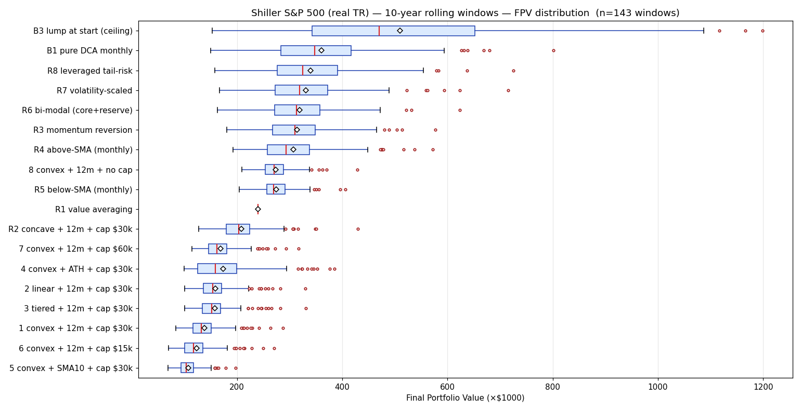
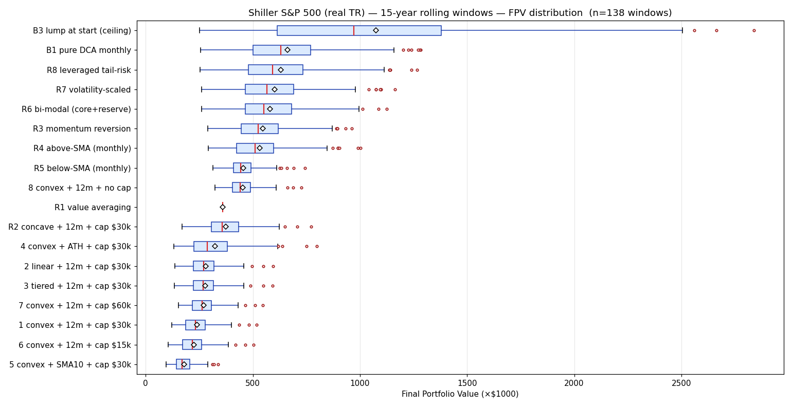
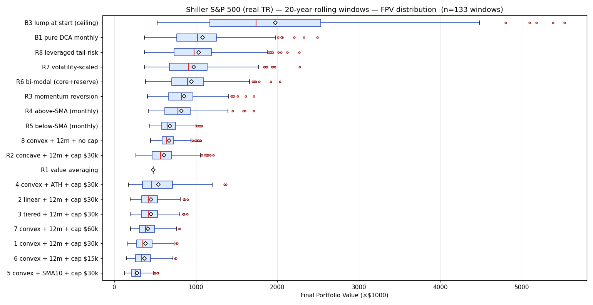
Альфа к Pure DCA
Для каждого окна считаем насколько стратегия обогнала простой DCA в процентах. Красная пунктирная линия — ноль (паритет с DCA). Коробки справа от нуля → стратегия чаще бьёт DCA на этих данных.
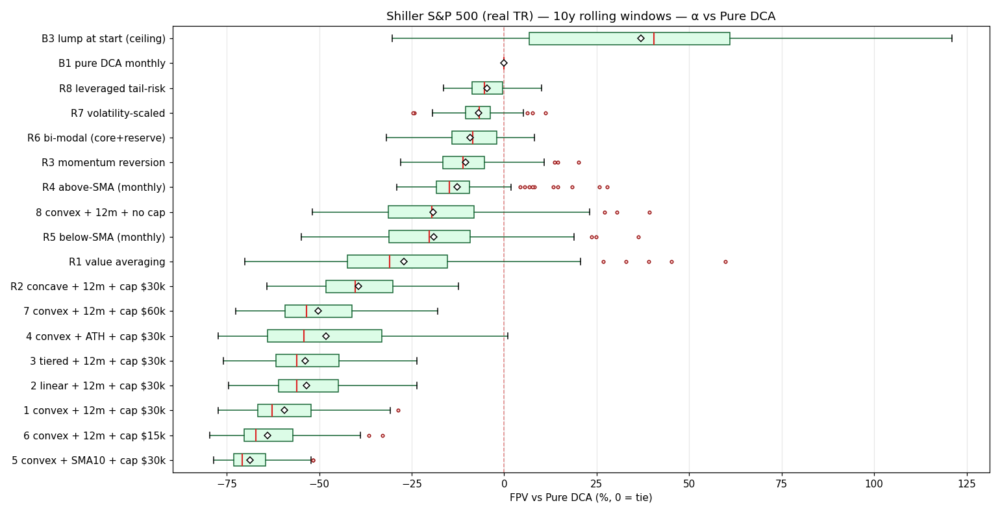
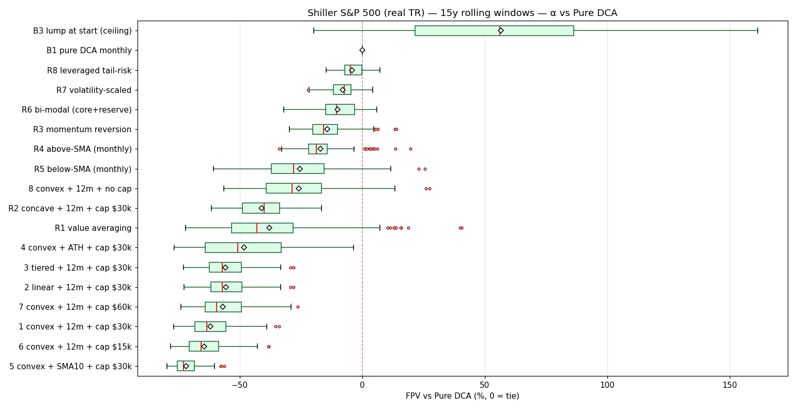
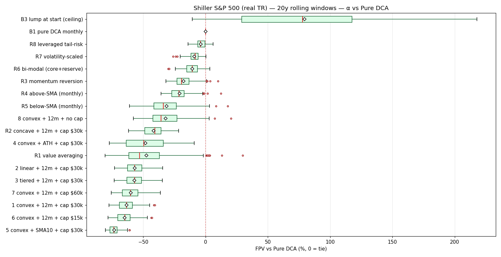
Худшее окно каждой стратегии
Самый плохой 10/15/20-летний период из всей истории. Показывает «минимальную гарантию» стратегии — что получит максимально невезучий инвестор.
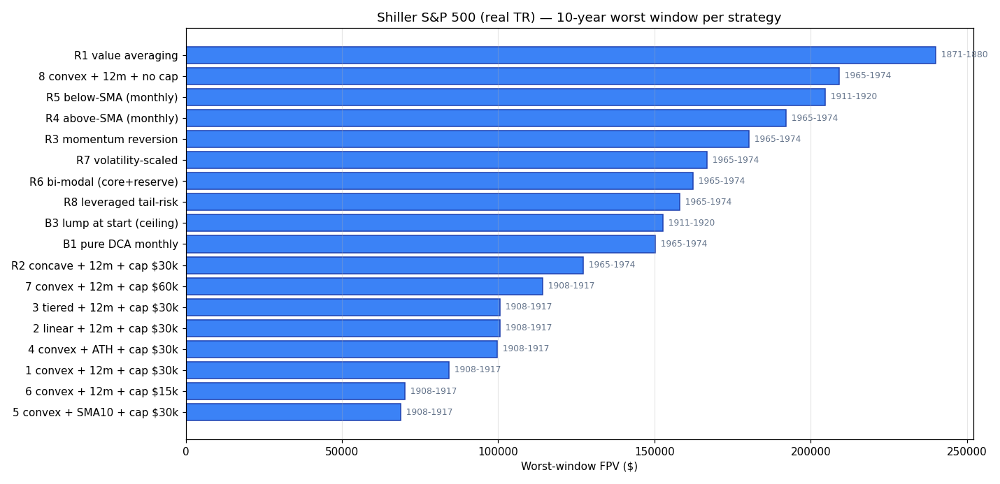
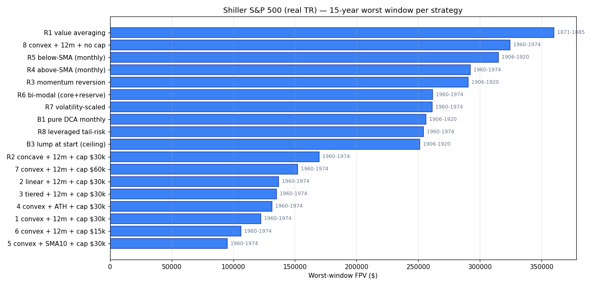
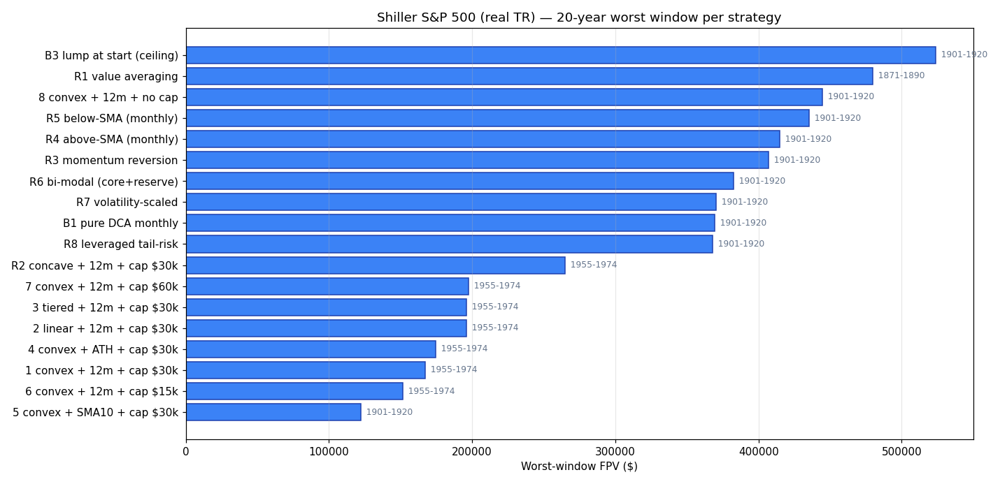
Nikkei 225 — 1985+ (nominal yen)
Период: Jan 1985 – Apr 2026 (496 месяцев). Nikkei без дивидендов, номинальные йены. Японская инфляция 1985+ мала относительно колебаний индекса.
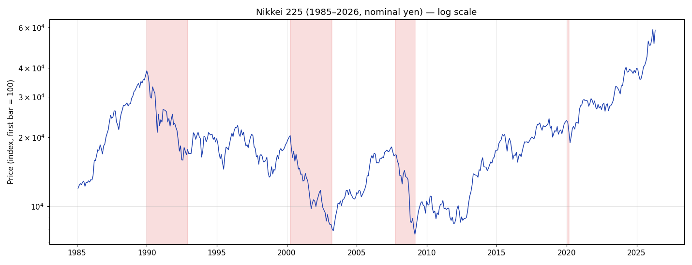
Сводная таблица по окнам
Для каждой длины окна (10/15/20 лет) сдвигаем стартовую дату по истории и прогоняем каждую стратегию (Rolling window). Смотрим что получается в среднем и в худшем случае — так видим, насколько результат зависит от везения с таймингом.
10-летние окна (32 окон)
| Стратегия | Median FPV | Worst FPV | Worst window | Best FPV | Median MaxDD | Worst MaxDD | α vs DCA (median) | % окон > DCA |
|---|---|---|---|---|---|---|---|---|
| R8 leveraged tail-risk | $270k | $136k | 1993–2002 | $439k | 22.1% | 49.9% | +3.1% | 62% |
| R6 bi-modal (core+reserve) | $263k | $143k | 1993–2002 | $425k | 21.0% | 42.8% | -1.7% | 41% |
| R7 volatility-scaled | $263k | $142k | 1993–2002 | $433k | 18.1% | 44.3% | -0.7% | 44% |
| B1 pure DCA monthly | $260k | $131k | 1993–2002 | $481k | 27.2% | 48.9% | +0.0% | 0% |
| R3 momentum reversion | $256k | $166k | 1993–2002 | $392k | 14.6% | 32.1% | -1.5% | 50% |
| R5 below-SMA (monthly) | $255k | $184k | 1993–2002 | $341k | 8.1% | 20.6% | -1.2% | 50% |
| 8 convex + 12m + no cap | $255k | $187k | 1993–2002 | $332k | 7.5% | 21.1% | -1.8% | 50% |
| B3 lump at start (ceiling) | $248k | $105k | 1989–1998 | $785k | 58.3% | 65.6% | -8.1% | 47% |
| R4 above-SMA (monthly) | $245k | $196k | 1993–2002 | $384k | 9.2% | 30.7% | -6.2% | 38% |
| R1 value averaging | $240k | $240k | 1985–1994 | $240k | 0.0% | 0.0% | -7.0% | 50% |
| R2 concave + 12m + cap $30k | $211k | $132k | 1993–2002 | $322k | 15.4% | 38.7% | -19.7% | 3% |
| 4 convex + ATH + cap $30k | $184k | $128k | 1993–2002 | $344k | 15.0% | 42.7% | -11.8% | 22% |
| 7 convex + 12m + cap $60k | $176k | $141k | 1993–2002 | $250k | 11.6% | 30.1% | -28.3% | 3% |
| 2 linear + 12m + cap $30k | $163k | $118k | 1993–2002 | $249k | 14.8% | 35.8% | -33.7% | 0% |
| 3 tiered + 12m + cap $30k | $162k | $118k | 1993–2002 | $251k | 14.5% | 36.1% | -33.7% | 0% |
| 1 convex + 12m + cap $30k | $146k | $111k | 1993–2002 | $220k | 14.5% | 35.1% | -39.9% | 0% |
| 6 convex + 12m + cap $15k | $130k | $95k | 1993–2002 | $204k | 16.4% | 39.3% | -45.9% | 0% |
| 5 convex + SMA10 + cap $30k | $101k | $73k | 1993–2002 | $143k | 12.5% | 30.9% | -60.1% | 0% |
15-летние окна (27 окон)
| Стратегия | Median FPV | Worst FPV | Worst window | Best FPV | Median MaxDD | Worst MaxDD | α vs DCA (median) | % окон > DCA |
|---|---|---|---|---|---|---|---|---|
| R8 leveraged tail-risk | $438k | $174k | 1988–2002 | $866k | 42.4% | 52.4% | +2.5% | 74% |
| R7 volatility-scaled | $427k | $216k | 1987–2001 | $848k | 33.5% | 48.4% | -1.0% | 48% |
| B1 pure DCA monthly | $426k | $171k | 1988–2002 | $971k | 42.2% | 51.9% | +0.0% | 0% |
| R6 bi-modal (core+reserve) | $423k | $186k | 1988–2002 | $812k | 36.4% | 47.9% | -0.9% | 44% |
| R3 momentum reversion | $409k | $234k | 1988–2002 | $743k | 25.1% | 34.6% | -4.0% | 41% |
| 8 convex + 12m + no cap | $408k | $261k | 1988–2002 | $544k | 12.2% | 25.7% | -4.2% | 48% |
| R5 below-SMA (monthly) | $407k | $264k | 1988–2002 | $575k | 14.3% | 26.2% | -4.5% | 44% |
| B3 lump at start (ceiling) | $381k | $111k | 1990–2004 | $1.77M | 62.8% | 79.9% | -15.6% | 37% |
| R4 above-SMA (monthly) | $380k | $279k | 1988–2002 | $680k | 12.1% | 30.7% | -10.7% | 37% |
| R1 value averaging | $360k | $360k | 1985–1999 | $360k | 0.0% | 0.0% | -15.5% | 41% |
| 4 convex + ATH + cap $30k | $352k | $187k | 1988–2002 | $550k | 28.1% | 47.1% | -8.1% | 33% |
| R2 concave + 12m + cap $30k | $339k | $169k | 1988–2002 | $563k | 30.2% | 45.1% | -20.5% | 0% |
| 7 convex + 12m + cap $60k | $284k | $171k | 1988–2002 | $390k | 18.6% | 37.0% | -34.4% | 0% |
| 2 linear + 12m + cap $30k | $281k | $150k | 1988–2002 | $418k | 26.2% | 43.0% | -34.2% | 0% |
| 3 tiered + 12m + cap $30k | $279k | $150k | 1988–2002 | $419k | 24.9% | 43.1% | -34.4% | 0% |
| 1 convex + 12m + cap $30k | $254k | $141k | 1988–2002 | $360k | 22.8% | 41.7% | -40.5% | 0% |
| 6 convex + 12m + cap $15k | $239k | $125k | 1988–2002 | $346k | 25.9% | 44.8% | -44.7% | 0% |
| 5 convex + SMA10 + cap $30k | $156k | $90k | 1988–2002 | $232k | 19.1% | 36.3% | -63.4% | 0% |
20-летние окна (22 окон)
| Стратегия | Median FPV | Worst FPV | Worst window | Best FPV | Median MaxDD | Worst MaxDD | α vs DCA (median) | % окон > DCA |
|---|---|---|---|---|---|---|---|---|
| R8 leveraged tail-risk | $712k | $278k | 1989–2008 | $1.53M | 49.4% | 53.6% | +2.7% | 86% |
| B1 pure DCA monthly | $690k | $272k | 1989–2008 | $1.47M | 48.8% | 53.2% | +0.0% | 0% |
| R6 bi-modal (core+reserve) | $683k | $288k | 1989–2008 | $1.38M | 44.3% | 50.3% | -1.0% | 32% |
| R7 volatility-scaled | $680k | $314k | 1992–2011 | $1.28M | 41.4% | 51.0% | -1.6% | 41% |
| R3 momentum reversion | $627k | $339k | 1989–2008 | $1.14M | 32.1% | 36.3% | -9.0% | 36% |
| 4 convex + ATH + cap $30k | $619k | $293k | 1989–2008 | $1.00M | 43.3% | 50.5% | -5.7% | 18% |
| 8 convex + 12m + no cap | $609k | $374k | 1989–2008 | $939k | 20.8% | 27.5% | -11.7% | 41% |
| R5 below-SMA (monthly) | $608k | $373k | 1989–2008 | $947k | 21.1% | 27.9% | -11.7% | 41% |
| R4 above-SMA (monthly) | $562k | $392k | 1989–2008 | $968k | 17.3% | 30.7% | -18.5% | 32% |
| R2 concave + 12m + cap $30k | $543k | $240k | 1989–2008 | $1.05M | 39.3% | 47.9% | -21.4% | 0% |
| B3 lump at start (ceiling) | $480k | $135k | 1989–2008 | $1.68M | 66.4% | 79.9% | -23.8% | 27% |
| R1 value averaging | $480k | $480k | 1985–2004 | $480k | 0.0% | 0.0% | -30.3% | 36% |
| 3 tiered + 12m + cap $30k | $443k | $207k | 1989–2008 | $793k | 36.9% | 46.7% | -35.1% | 0% |
| 2 linear + 12m + cap $30k | $441k | $206k | 1989–2008 | $788k | 36.5% | 46.9% | -35.4% | 0% |
| 7 convex + 12m + cap $60k | $412k | $220k | 1989–2008 | $697k | 30.5% | 41.6% | -38.1% | 0% |
| 1 convex + 12m + cap $30k | $382k | $190k | 1989–2008 | $667k | 35.9% | 45.7% | -42.4% | 0% |
| 6 convex + 12m + cap $15k | $368k | $176k | 1989–2008 | $651k | 39.2% | 47.9% | -44.6% | 0% |
| 5 convex + SMA10 + cap $30k | $242k | $122k | 1989–2008 | $430k | 31.2% | 40.7% | -64.8% | 0% |
Распределение FPV по окнам
Коробка показывает 25–75 персентили (половина всех исходов), усы — 5–95, красная линия — медиана. Чем выше и компактнее коробка — тем надёжнее стратегия в разных стартовых условиях.
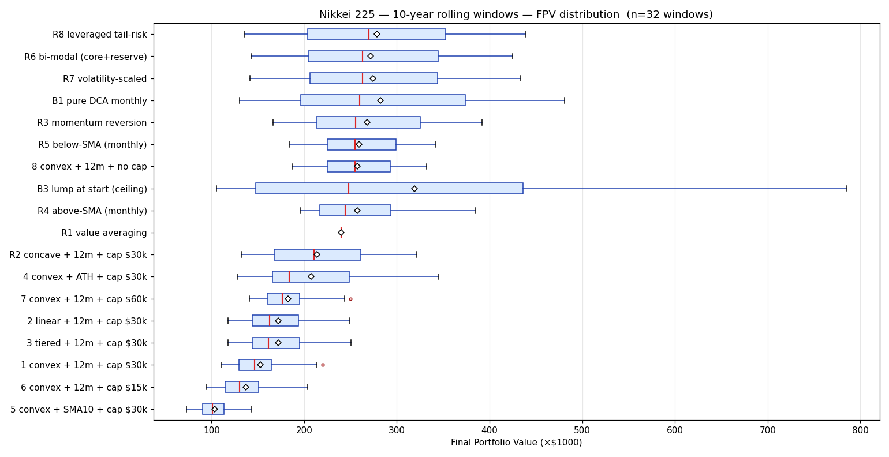
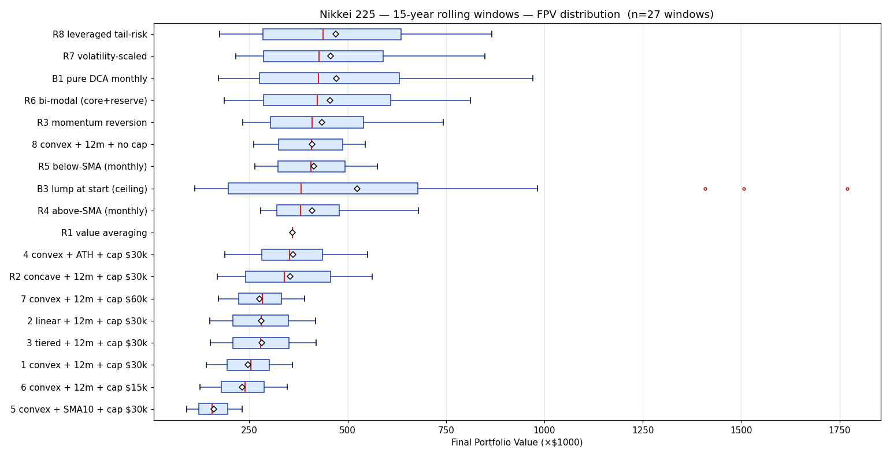
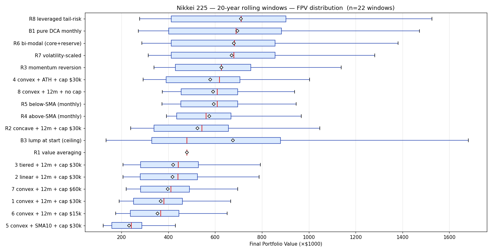
Альфа к Pure DCA
Для каждого окна считаем насколько стратегия обогнала простой DCA в процентах. Красная пунктирная линия — ноль (паритет с DCA). Коробки справа от нуля → стратегия чаще бьёт DCA на этих данных.
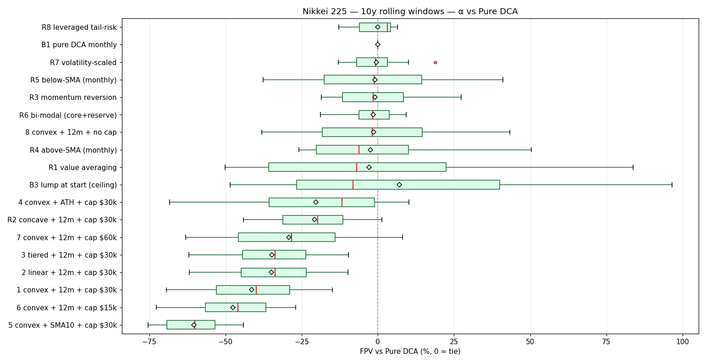
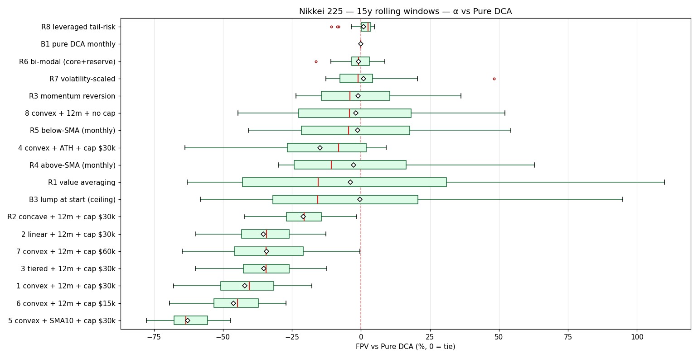
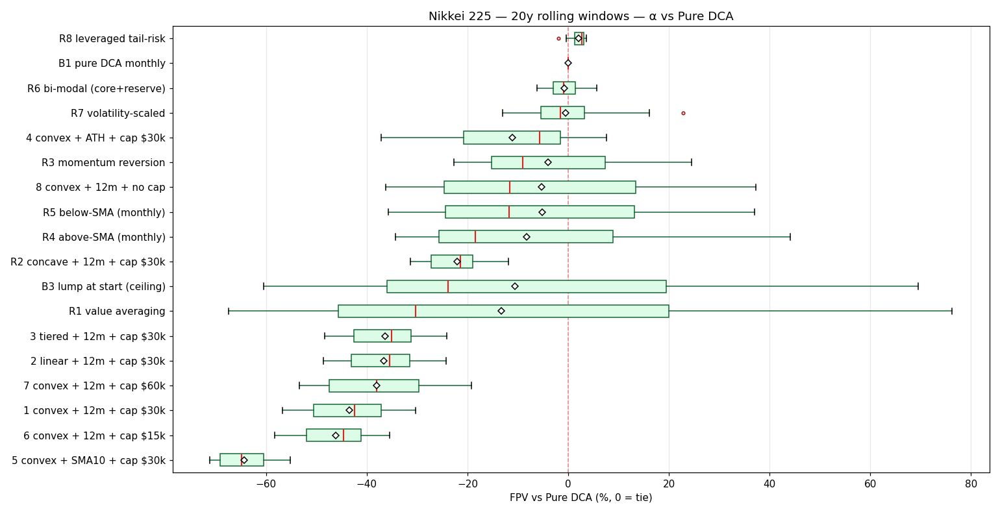
Худшее окно каждой стратегии
Самый плохой 10/15/20-летний период из всей истории. Показывает «минимальную гарантию» стратегии — что получит максимально невезучий инвестор.
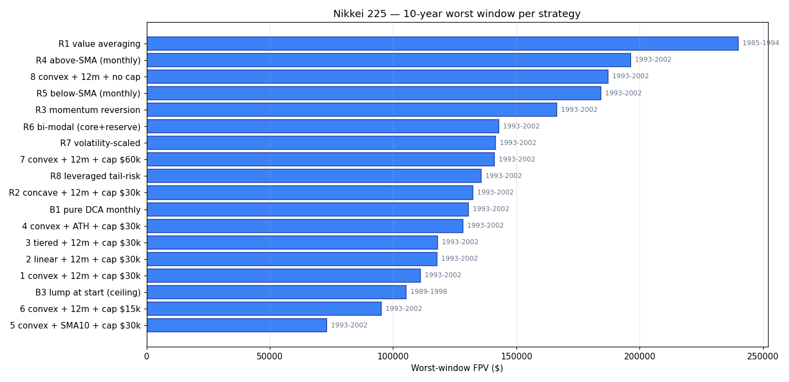
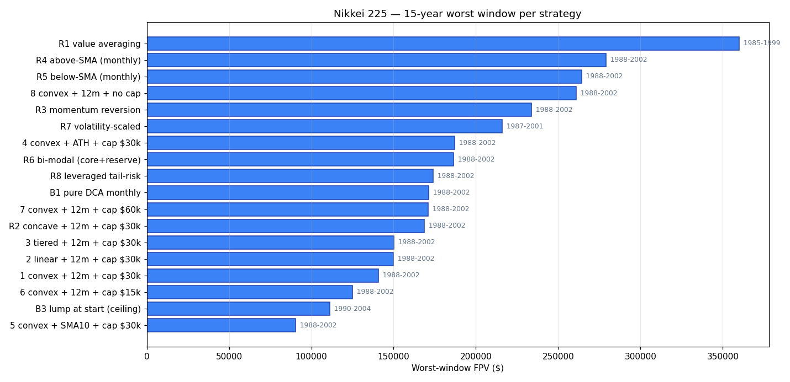
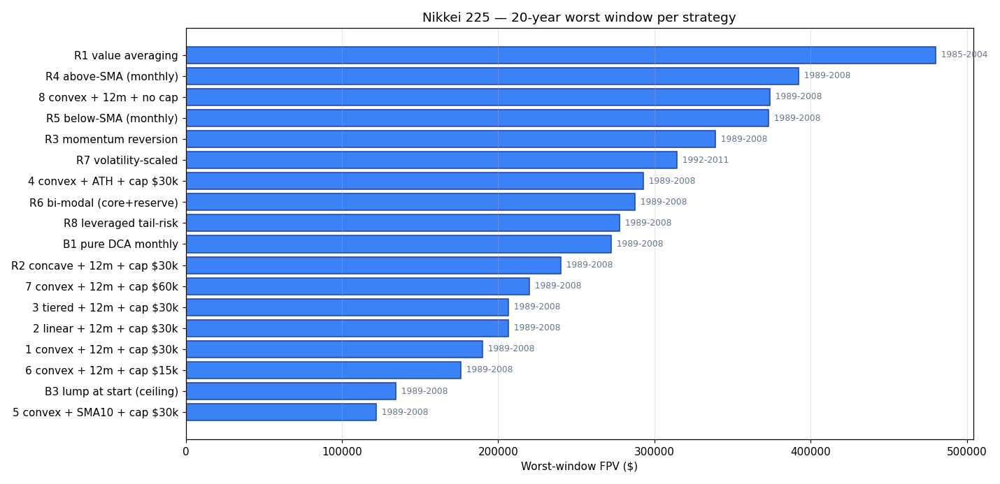